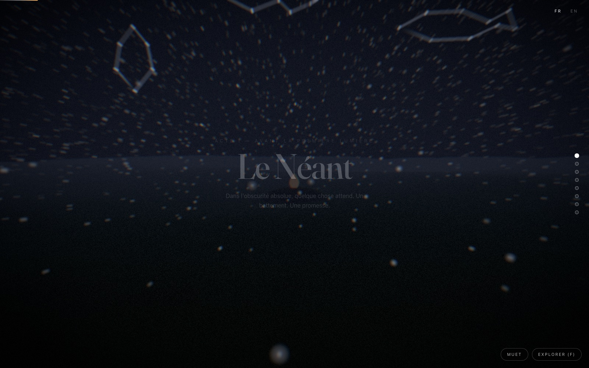
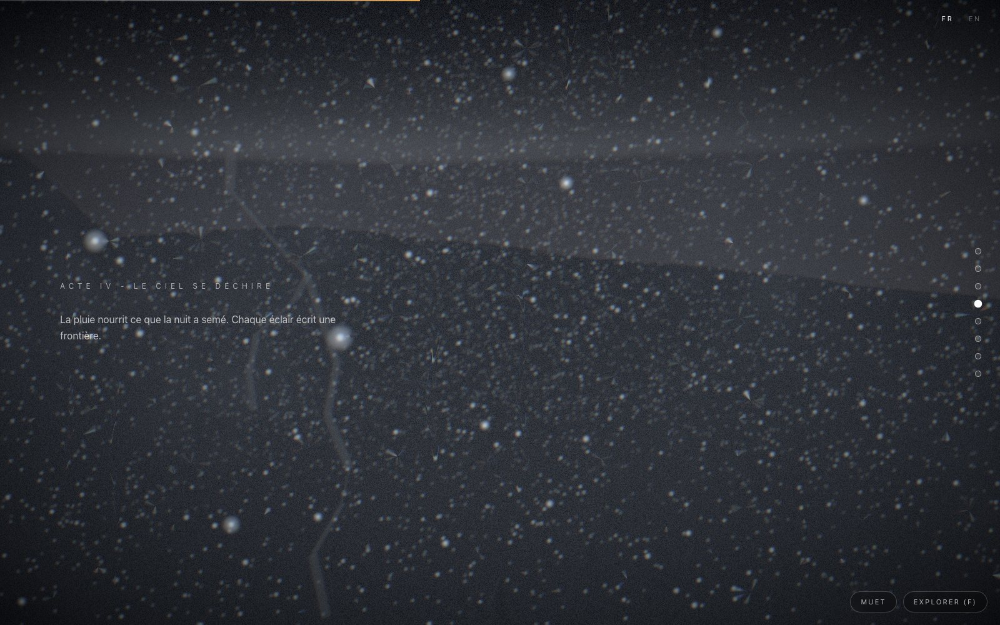
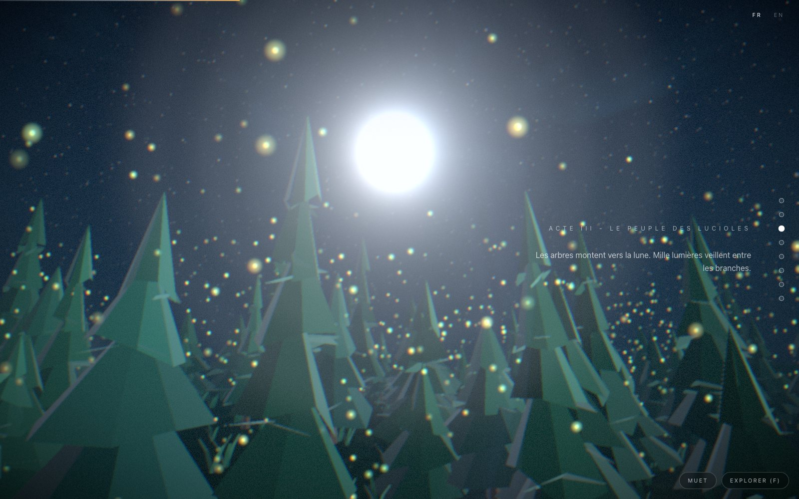
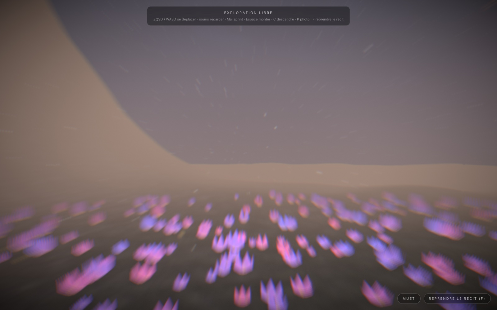
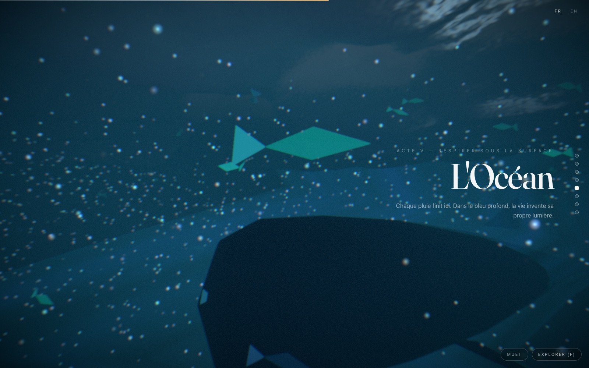

ProjetsProjects
Chaque chiffre est mesuré, chaque anecdote est vraie.Every number is measured, every story is true.
Éclosion
- NatureWhat
- Expérience web 3D où le défilement est le temps — huit actes, du Néant à l'Aube. 100 % procédurale : aucun modèle, aucune texture, aucun fichier audio ; géométrie, matériaux GLSL, plus de 100 000 particules et la musique (WebAudio) générés par le code.A 3D web experience where scrolling is time — eight acts, from the Void to Dawn. 100% procedural: no models, no textures, no audio files; geometry, GLSL materials, 100,000+ particles and the music itself (WebAudio) are generated by code.
- RôleRole
- Conception & développement, en soloDesign & development, solo
- Stack
- Next.js 15 · React 19 · TypeScript strict · Three.js / React Three Fiber · GSAP ScrollTrigger · Lenis · zustand · WebAudio
- VolumeSize
- ~11 600 lignes ·lines · 195 fichiersfiles
- MesuresMeasured
- −19 % de charge ·first-visit weight · pire frameworst frame 617 → 167 ms · Lighthouse 100 / 100 / 100
- LiensLinks
- Voir l'expérienceSee it live · Lire le codeRead the code
Trois choix qui structurent toutThree choices that shape everything
Le contrat de scroll : zéro render React à 60 fpsThe scroll contract: zero React renders at 60 fps
Un seul lissage (Lenis), un seul ScrollTrigger maître qui scrube une timeline GSAP de durée 1, et un registre d'uniforms mutables que les tweens écrivent et que le rendu lit à chaque frame — sans jamais passer par un render React. React ne se réveille qu'aux changements d'acte ; le texte DOM suit via un unique MotionValue, hors React lui aussi.One smoothing pass (Lenis), one master ScrollTrigger scrubbing a duration-1 GSAP timeline, and a registry of mutable uniforms that tweens write and the render loop reads every frame — without ever going through a React render. React only wakes on act changes; the DOM text follows through a single MotionValue, outside React too.

Un seul monde, une seule véritéOne world, one truth
groundHeight(x, z) — une fonction analytique — génère le terrain visible, contraint la marche en exploration libre, fait rebondir la physique et borne les vols d'oiseaux. Ce qu'on voit est exactement ce qu'on touche. Même logique pour la caméra : une seule courbe CatmullRom continue, chaque acte voyageant jusqu'au premier point du suivant — aucune coupure sur tout le film.groundHeight(x, z) — one analytic function — generates the visible terrain, constrains free-roam walking, bounces the physics and bounds the birds' flight. What you see is exactly what you touch. Same logic for the camera: a single continuous CatmullRom curve, each act travelling to the first point of the next — not one cut across the whole film.
Des particules sans étatStateless particles
Pluie, lucioles en curl-noise, braises, vortex du final : chaque comportement est une fonction fermée de (graine, temps) évaluée dans le vertex shader. Pas de simulation à maintenir, pas d'aller-retour GPU. Les buffers sont alloués une fois au niveau de qualité maximal ; changer de tier ne fait que déplacer un setDrawRange.Rain, curl-noise fireflies, embers, the finale's vortex: every behaviour is a closed function of (seed, time) evaluated in the vertex shader. No simulation to maintain, no GPU round-trips. Buffers are allocated once at the maximum quality tier; switching tiers only moves a setDrawRange.

L'ingénierie, chiffréeEngineering, measured
| MesureMetric | AvantBefore | AprèsAfter |
|---|---|---|
| Charge de première visiteFirst-visit weight | 422 Kio | 342 Kio (−19 %) |
| Pire frame aux frontières d'acte*Worst frame at act boundaries* | 617 ms | 167 ms |
| Lighthouse (accessibilité / bonnes pratiques / SEO)Lighthouse (accessibility / best practices / SEO) | — | 100 / 100 / 100 |
| Arbres de la forêt, à coût de frame mesuréForest trees, at measured frame cost | 420 | 630, médiane inchangée à 0,1 ms près, median unchanged within 0.1 ms |
*banc GPU intégré forcé au tier maximal — le pire cas mesurable.*integrated GPU bench forced to the maximum tier — the worst measurable case.
Les −19 % : la police italique de Fraunces — 80 Ko préchargés en priorité haute — n'était rendue nulle part. Une seule occurrence du mot « italic » dans tout le code : sa propre déclaration.The −19%: Fraunces' italic face — 80 KB preloaded at high priority — was never rendered anywhere. A single occurrence of the word “italic” in the whole codebase: its own declaration.
Les 617 ms : trois stalls empilés à chaque frontière d'acte — le préchauffage de shaders compilait sous la mauvaise clé de cache, un acte se dessinait prêt ou pas, et le driver payait son introspection différée (~180 ms par programme sur GPU intégré). Démêlés au profileur CPU et aux hooks GL posés sur linkProgram. Réponse : chaque acte monte invisible, compile sous l'état du composer, se fait introspecter un programme par frame, puis se révèle — le tout couvert par le brouillard de la scène. Aucun changement visuel, frontières fluides.The 617 ms: three stalls stacked at every act boundary — shader warm-up compiled under the wrong cache key, an act drew whether ready or not, and the driver charged its deferred introspection (~180 ms per program on integrated GPUs). Untangled with the CPU profiler and GL hooks on linkProgram. The answer: each act mounts invisible, compiles under the composer's state, gets one program introspected per frame, then reveals itself — all covered by the scene's fog. No visual change, fluid boundaries.

Le débogage comme disciplineDebugging as a discipline
Rien ne se corrige sans être vu. Un harnais CDP pilote un vrai Chrome : entrée dans l'expérience, saut à un beat précis, capture — avant/après pour chaque changement de rendu. Les effets liés à la vitesse se capturent en plein défilement ; une capture posée ne montre rien. Le tier GPU se force en injectant la chaîne du renderer.Nothing gets fixed without being seen. A CDP harness drives a real Chrome: enter the experience, jump to a precise beat, capture — before/after for every rendering change. Speed-dependent effects are captured mid-scroll; a static capture shows nothing. The GPU tier is forced by injecting the renderer string.
Le soleil qui ne s'embrasait pasThe sun that would not ignite
Le disque de l'aube rendait gris — le brouillard exponentiel en mangeait 99,5 % à cette distance, et son plafond de luminance restait sous le seuil du bloom : « bright enough to bloom », disait le commentaire ; c'était faux depuis toujours. Correctif : le soleil ignore le brouillard (la lune, elle, le ré-émule à l'identique en JS) et une courbe d'embrasement qui passe le seuil — braise sous l'horizon, or à l'affleurement, crème au zénith.The dawn disc rendered grey — exponential fog ate 99.5% of it at that distance, and its luminance ceiling sat below the bloom threshold: “bright enough to bloom”, the comment said; it had been false all along. The fix: the sun ignores fog (the moon re-emulates it identically in JS) and an ignition curve that crosses the threshold — ember below the horizon, gold at the rim, cream at the zenith.

Les lignes de l'océanThe ocean lines
Un même symptôme — « des traits blancs » — s'est révélé être cinq défauts empilés, chacun masquant le suivant : ghosting du flou de vitesse, arêtes des fûts de lumière, dôme de ciel nocturne visible sous l'eau, bord de la nappe de Gerstner, plancher trop éclairé. La méthode qui a fini par gagner : masquer les composants un à un pour isoler la source avant de toucher au moindre shader.One symptom — “white streaks” — turned out to be five stacked defects, each masking the next: motion-blur ghosting, light-shaft edges, the night skydome visible underwater, the edge of the Gerstner sheet, an over-lit seafloor. The method that finally won: hide components one by one to isolate the source before touching a single shader.

Tenir la qualité dans le tempsHolding quality over time
- CI sur chaque push : lint strict (
anyinterdit), TypeScript strict, 16 tests unitaires — pavage des actes, PRNG seedé, sol analytique, parité FR/EN — et build.CI on every push: strict lint (anyforbidden), strict TypeScript, 16 unit tests — act tiling, seeded PRNG, analytic ground, FR/EN parity — and the build. - Un smoke test e2e joue le film entier — boot, entrée, chaque acte, l'émergence, le fallback, dans les deux langues — et exige zéro erreur console. Il a attrapé une vraie course (dispose pendant un link de shader) le jour de sa mise en service.An e2e smoke test plays the whole film — boot, entry, every act, the emergence, the fallback, in both languages — and requires zero console errors. It caught a real race (dispose during a shader link) the day it went live.
- Workflow : PRs de features vers
dev, releasedev → main= déploiement.Workflow: feature PRs intodev, releasedev → main= deploy.
Accessible par constructionAccessible by construction
- Sans WebGL2 :
/fallback— le récit complet en HTML rendu serveur, sans JavaScript, bilingue.Without WebGL2:/fallback— the full story as server-rendered HTML, no JavaScript, bilingual. prefers-reduced-motion: scroll natif, particules à 4 %, pas de shake, son coupé.prefers-reduced-motion: native scroll, particles at 4%, no shake, sound off.- Annonces
aria-livepar acte, parcours clavier complet,focus-visiblepartout.aria-liveannouncements per act, full keyboard path,focus-visibleeverywhere.
Ce que ce projet dit de ma façon de travailler : mesurer avant de corriger, vérifier chaque changement de rendu par capture, isoler avant d'accuser — et encoder chaque leçon payée, en test, en garde-fou, en invariant écrit, pour qu'elle ne coûte qu'une fois.What this project says about how I work: measure before fixing, verify every rendering change with a capture, isolate before blaming — and encode every lesson paid for, as a test, a guardrail, a written invariant, so it only costs once.
Autres projetsMore projects
Gamedex
Une vraie app, pas un tutoriel : recherche sur l'API RAWG, filtres, favoris persistants.A real app, not a tutorial: RAWG API search, filters, persistent favorites.
laying_grass_cpp
Le versant systèmes : un jeu console en C++17, zéro dépendance.The systems side: a console game in C++17, zero dependencies.
Ludoria
Katerenga, Congress, Isolation — jeux de plateau développés à trois ; 32 commits vérifiés de ma main, repo d'origine chez simonpotel.Katerenga, Congress, Isolation — board games built as a team of three; 32 verified commits of mine, original repo under simonpotel.
Un détail à creuser, un projet à discuter ?A detail worth digging into, a project to discuss?
Écrivez-moiGet in touchnoa.tournoy@supinfo.comLinkedIn
← Retour à l'accueil← Back to the front door↑ Haut de page↑ Top of page